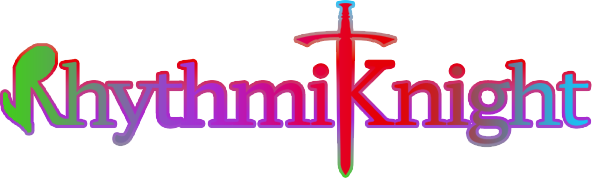

리드믹 나이트
1치킨 알만툴 게임잼 2025 출품작
수록곡 개수: 20(스토리)+4(추가)
알려진 버그
* 전체화면을 했을때, 왼쪽 위에 고정됨. (클릭 해주면 정상화 됨)
* 가끔 사운드가 끊기거나, 음질이 낮아짐.
* 가끔 사운드가 안나옴. (클릭 해주면 정상화 됨)
* 불가능 난이도에서 가끔 프레임 드랍
* 대화창에서 z꾹 누를때 가끔 화면이 멈춤
* 난이도 선택 직후 esc, x와 같은 뒤로가기 키를 누르면 닫을 수 없음
* 아주 낮은 빈도로 노트가 움직이지 않는 문제가 있음. (재시작 필요)
다운로드